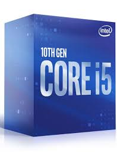
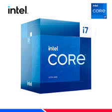
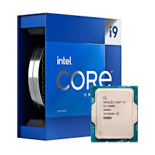

La Intel Core i5 es una línea de procesadores de alto rendimiento que ofrece un equilibrio perfecto entre potencia y eficiencia. Con múltiples núcleos y una capacidad de multitarea avanzada,
los i5 están diseñados para usuarios que buscan un rendimiento sólido tanto para tareas diarias como para juegos y aplicaciones intensivas. Gracias a la tecnología de arquitectura Intel,
estos procesadores proporcionan un aumento en la velocidad y la capacidad de respuesta, optimizando la experiencia en aplicaciones de productividad, multimedia y videojuegos.
Características clave:
Número de núcleos: Generalmente de 4 a 6, lo que permite una multitarea fluida.
Velocidades de reloj: De 2.9 GHz a 5.3 GHz con la tecnología Turbo Boost.
Tecnología de fabricación: Los últimos modelos utilizan tecnología de 10 nm, mejorando la eficiencia energética.
Compatibilidad: Compatible con plataformas de última generación, como las placas base con chipsets Intel 400 y 500 series.
En resumen, el Intel i5 es ideal para usuarios que necesitan una solución potente y económica para juegos, diseño gráfico,
edición de video y tareas multitarea, sin llegar al precio de los modelos más avanzados como los i7 e i9.

El Intel Core i7 es una línea de procesadores de alto rendimiento diseñada para usuarios que requieren potencia y capacidad de respuesta excepcionales.
Con una mayor cantidad de núcleos y un rendimiento superior en comparación con el i5, el i7 es ideal para tareas intensivas como edición de video, modelado 3D, juegos avanzados y trabajo profesional en aplicaciones complejas.
Además, su capacidad para manejar múltiples tareas simultáneamente y su velocidad de procesamiento avanzada lo convierte en una opción favorita entre los entusiastas de la tecnología y los profesionales.
Características clave:
Número de núcleos: Generalmente entre 6 y 8, lo que mejora el rendimiento multitarea y la eficiencia en aplicaciones exigentes.
Velocidades de reloj: Rango de 2.9 GHz a 5.4 GHz con la tecnología Turbo Boost, lo que permite un aumento de rendimiento bajo demanda.
Tecnología de fabricación: Los modelos más recientes utilizan tecnología de 10 nm, optimizando la eficiencia energética sin sacrificar el rendimiento.
Hyper-Threading: Esta tecnología permite que cada núcleo físico maneje dos tareas simultáneamente, mejorando aún más el rendimiento en procesos paralelizados.
En resumen, el Intel i7 es perfecto para usuarios avanzados que requieren una mayor capacidad de procesamiento para tareas profesionales, multitarea pesada y juegos de última generación,
todo mientras mantiene una eficiencia energética destacable.

El Intel Core i9 es la gama más alta de procesadores de Intel, diseñada para usuarios que necesitan el máximo rendimiento en tareas altamente demandantes. Con una cantidad significativa de núcleos,
un rendimiento superior en multitarea y una frecuencia de reloj más alta, el i9 está hecho para profesionales que trabajan con software de alto rendimiento, como la edición de video en 4K y 8K, simulaciones complejas,
inteligencia artificial y juegos de última generación a altas tasas de fotogramas. Ideal para estaciones de trabajo, el i9 es capaz de manejar cargas de trabajo intensivas sin esfuerzo.
Características clave:
Número de núcleos: Entre 8 y 18 núcleos, permitiendo una capacidad de procesamiento masiva para tareas de alto rendimiento.
Velocidades de reloj: Desde 3.5 GHz hasta 5.8 GHz con Turbo Boost Max 3.0, garantizando un rendimiento ultrarrápido cuando más se necesita.
Tecnología de fabricación: Utiliza tecnología de 10 nm o 14 nm, dependiendo del modelo, maximizando el rendimiento y la eficiencia energética.
Hyper-Threading y Multi-Threading: Con la capacidad de gestionar más de un hilo por núcleo, el i9 es capaz de ejecutar muchas más tareas simultáneamente,
lo que lo hace ideal para entornos de trabajo profesionales y científicos.
Overclocking: Muchos modelos de i9 son desbloqueados, lo que permite a los usuarios exprimir aún más rendimiento mediante overclocking.
En resumen, el Intel i9 es la opción definitiva para quienes buscan el máximo rendimiento en todos los aspectos, desde aplicaciones profesionales hasta experiencias de juego extremas,
permitiendo a los usuarios manejar las tareas más exigentes con facilidad y rapidez.